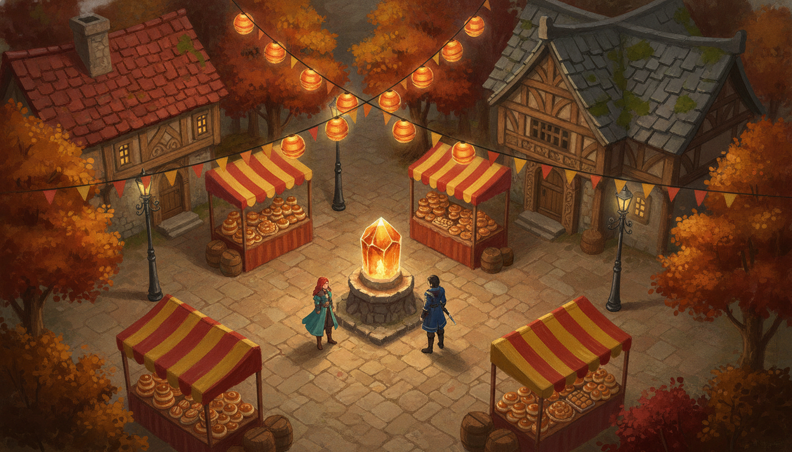
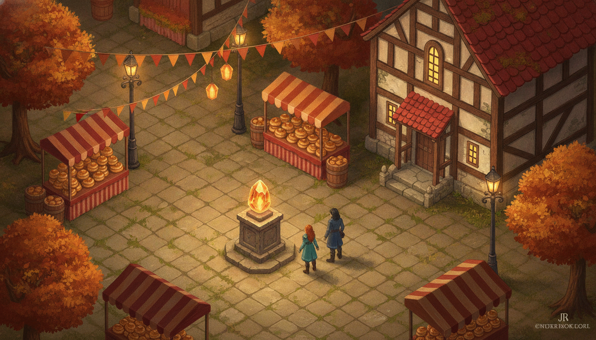
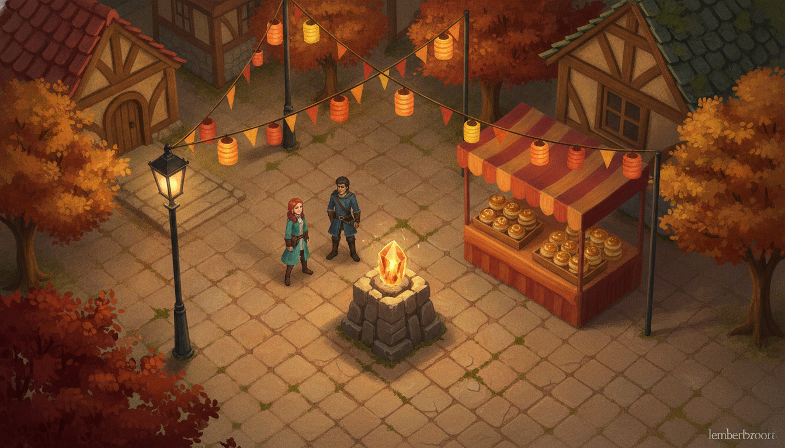

characters ≈ 1/9 frame height · whole square visible · most room for two players to split up

characters ≈ 1/6 frame height · part of the square · detail clearly readable

characters ≈ 1/4 frame height · a corner of the square · maximum painterly detail, tightest co-op leash